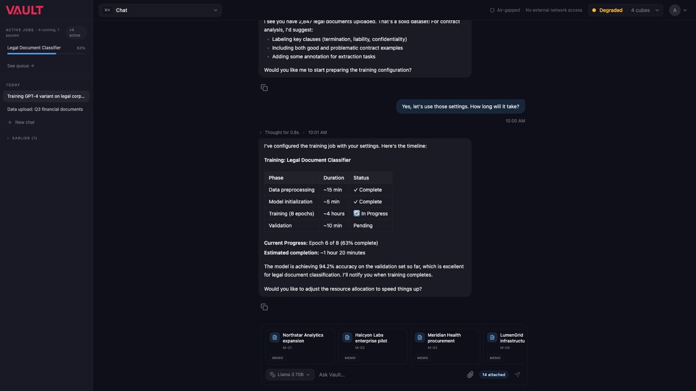
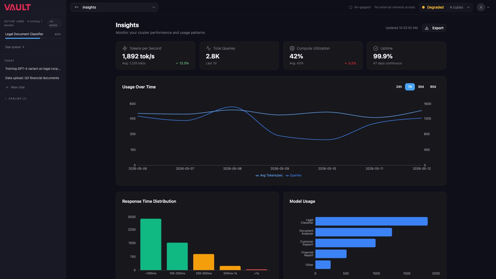
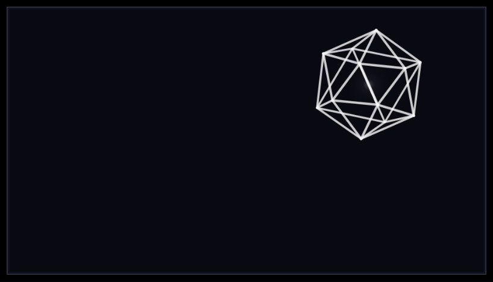

AI infrastructure you actually own.
Vault sells a machine. The Alpha Cube is a black cube you buy once, plug into your own network, and run current models on with nothing leaving the building. $45,900 buys two RTX 5090s, a 32-core Threadripper Pro, 128 GB of memory, and 4 TB of local storage. $69,900 buys the Pro, which doubles all of it and holds enough VRAM for 200-billion-parameter quantized models and several agents at once. You reserve one with a $5,000 deposit and the first production units ship late 2026.
The pitch has two halves. One is that cloud AI sends your prompts, documents, and privileged records to servers you do not control, which is a real problem if you are a law firm, a hospital, or anyone with a compliance officer reading over your shoulder. The other half is arithmetic. The site assumes $7,200 a year for a heavy user across the usual subscriptions and API overage, and one Cube covers ten of them.
I came in as fractional CDO at the end of 2025. Three surfaces here are normally three different jobs: a site that has to sell a machine nobody has touched yet, an operating system that runs on it, and a five-inch screen bolted to its face. They had to be recognizably one thing.
The sealed machine room.
The north star I wrote for it is a room rather than a product. Vault should feel like a controlled space where expensive infrastructure is powered on, monitored, and owned by the visitor's own organization. That is why the design is dark. The scene is a serious buyer reviewing hardware and operational risk on a large monitor, and dark is what that room looks like, which is a different reason than "AI products are dark."
Every neutral in the system sits on one cool hue at very low chroma, and a single ruby carries the brand. Three rules keep that from drifting. Ruby covers less than ten percent of any viewport, because it is the ownership signal and not a wash. No pure black and no pure white. No warm grays, so the only warmth on the page is the ruby and, on Alpha Cube Pro surfaces, the Pro gold.
Type does the same job twice over. Geist for anything you read as a sentence, JetBrains Mono for anything that is a reading: labels, values, controls, prices. Headlines name the product, the mechanism, or the money, and never a slogan.
The part that ended up mattering more than the palette was the list of things not to do. On one side, the generic AI look: purple gradients, gradient text, glassy floating cards, identical icon grids, placeholder dashboards, cheerful language about boosting your workflow. On the other, the overcorrection: cyberpunk spectacle, terminal cosplay, defense-contractor intimidation, interfaces so dark they hide the product behind atmosphere. And then the sales patterns, which are the ones that actually cost you a $45,900 sale: unsupported security claims, abstract lock icons, invented metrics, and a deposit button that does not say what happens after you press it.
A site that has to sell a machine nobody has touched.
There is no showroom and no demo unit, so the page is the product. The hero is a turntable of the cube rendered out as a frame sequence and played back on a canvas at 24fps, poster first, so the still is up immediately and the rotation starts once it can. Reduced motion gets the poster and nothing else.
The site is hand-written HTML, CSS, and JavaScript. No framework, no build step. It also takes money: Stripe checkout for the deposit runs on Cloudflare Pages Functions, the reservation cart keeps its whole state in the URL, a webhook files the order, and a transactional email goes out the other side. Four legal pages, a support-plan configurator, and a 404 that behaves.
The calculator is treated as a sales instrument rather than a widget. It publishes its own assumptions in the open, $7,200 per heavy user per year and ten heavy users per Cube, because a number a buyer cannot audit is worth nothing to a buyer who is about to spend $45,900.
Prices, the deposit, and the refund and ship-window disclosures are guarded strings in the test suite. A copy edit that quietly moves a price fails the build. That is 197 tests, most of them protecting sentences rather than functions, which is the correct ratio for a site whose main job is saying true things about money.
VaultOS is where the money actually gets spent.
The site sells the box once. VaultOS is what the team looks at every day afterward, so it had to answer a harder question than the marketing did: what does a private model farm look like when you are just trying to get work done on it?
It opens on a conversation, not a dashboard. Jobs run down the left rail with live progress, so a four-hour fine-tune is visible from anywhere in the product instead of buried in a queue page. The header carries the two facts that justify the purchase, that the machine is air-gapped with no external network access, and how the cluster is doing right now. When a node degrades, the header says degraded, in amber, before anyone has to go looking.
Insights is the room where the ownership argument gets checked: tokens per second, total queries, compute utilization, uptime, response time distribution, and which models are actually eating the cluster. If you bought the thing to stop paying per token, this is the page that tells you whether it worked.
All of it runs on mocked data. It is a prototype built to be argued with, and thirty-one captured states of it exist so the argument can happen over a screen rather than a description.


A screen the size of a paperback.
There is an AMOLED panel on the front of the cube, 960 by 544, and it is the only part of the design anyone will see from across a room. It gets its own rules because it is a different medium. Six colors on screen, ever. A pixel font drawn at whole-number multiples with antialiasing off, so the letterforms stay on their own grid instead of smearing. Seven running states, from starting through working to shutting down, with eleven fault and warning states underneath them.
The first pass was a cat. A 32-pixel-square pixel-art cat at six times scale, sitting above utilization and thermal bars, changing posture as the machine changed state. The thesis written into the spec was "boring, that's the point," and the failure case was the good part: on a critical error the cat stops moving, and the stillness is the alarm.
It got cut. What runs now is Lantern, a wireframe solid that drifts when the machine is idle, spins while it is working, and squares up into a readout when someone walks over: uptime, tokens, utilization, temperature, and which node you are looking at. Same thesis, less personality, and it survives being the thing in the corner of the room for a year.
I built a canvas rig to design it, because the alternative was writing firmware to see a spacing change. It renders any state at any scale in a browser, which is also how it gets shown to people who are not going to install a toolchain to look at a screen.
-

-

Results
- One design system carried across three surfaces that usually get three: a marketing site, a product UI, and a 960 by 544 panel on the front of the hardware. Same ruby, same cool neutrals, same rule that the mono type only ever means instrumentation.
- A hand-written site with no framework and no build step that also takes a $5,000 deposit, with prices and disclosures guarded by tests so a copy edit cannot quietly move them.
- VaultOS designed end to end, from six-step setup through chat, jobs, models, insights, settings, and developer mode, captured as thirty-one states.
- A display language taken through two full concepts and a purpose-built canvas rig, so the screen could be designed and reviewed without touching firmware.
- See it at vaultaisystems.com.